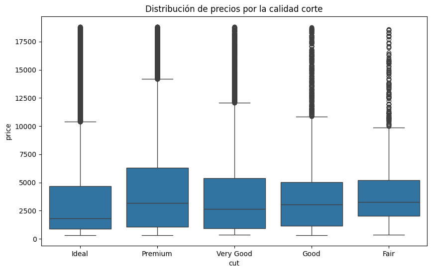
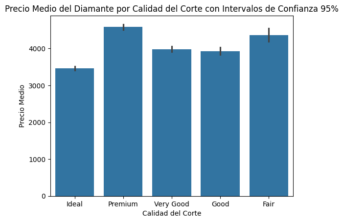
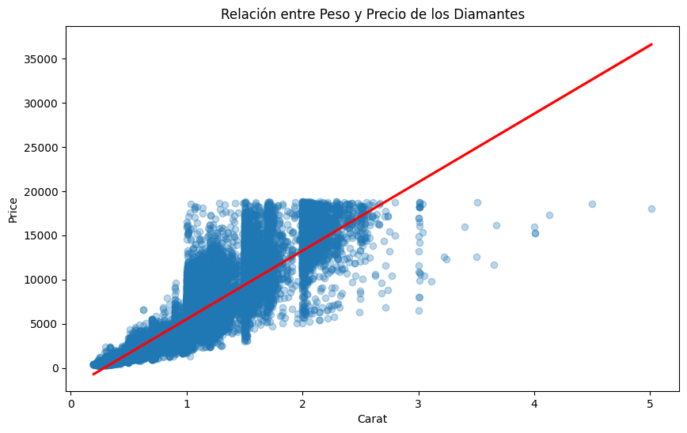
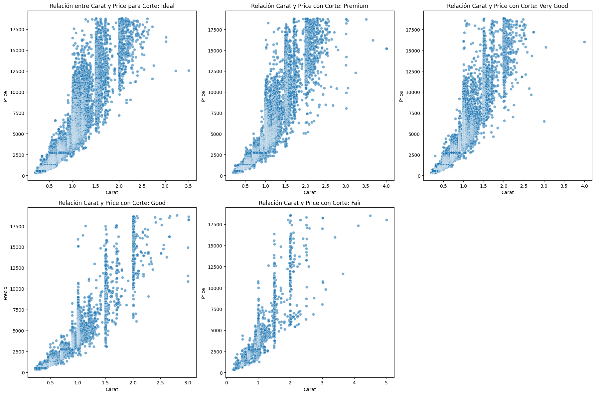
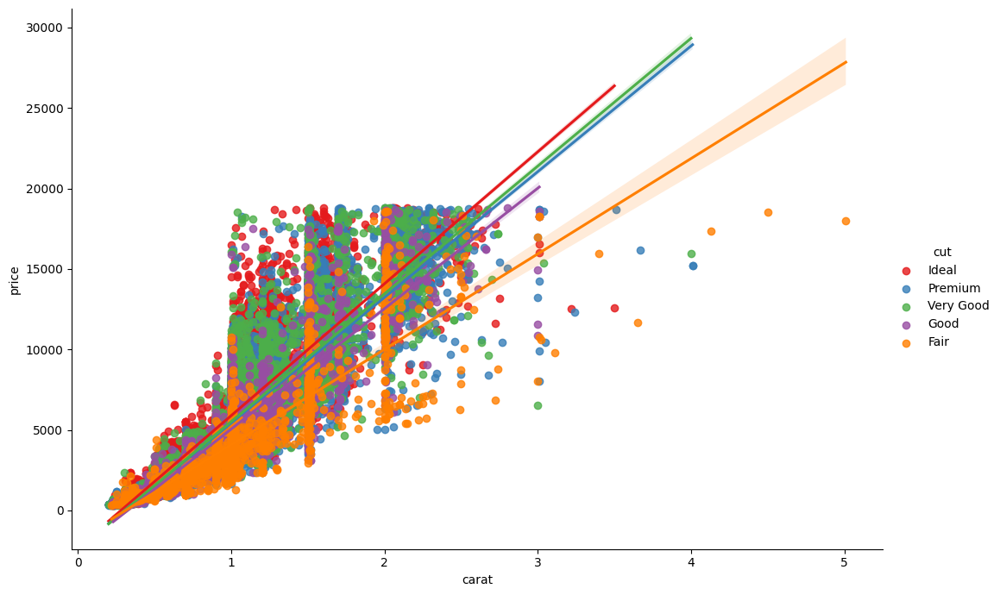

Dataset: diamonds de seaborn (53.940 observaciones, 10 variables).
Variables: carat, cut, color, clarity, depth, table, price, x, y, z.
📓 Descargar notebook .ipynb1 — Carga de datos
Se carga el dataset mediante seaborn.load_dataset('diamonds'). Contiene 53.940 observaciones con 10 variables: quilates, calidad del corte, color, claridad, profundidad, tabla, precio y dimensiones (x, y, z).
2 — Precio vs Calidad del corte
Boxplot de precio segmentado por calidad del corte (Fair, Good, Very Good, Premium, Ideal).

Barplot con intervalos de confianza del 95% para la media del precio por corte.

ANOVA (OLS): Se ajusta un modelo price ~ C(cut). η² = 0.0129, lo que indica que el corte explica aproximadamente el 1.3% de la varianza del precio.
| Corte | N | Precio medio | Desv. estándar |
|---|---|---|---|
| Ideal | 21.551 | 3.457,54 $ | 3.808,40 $ |
| Premium | 13.791 | 4.584,26 $ | 4.349,20 $ |
| Very Good | 12.082 | 3.981,76 $ | 3.935,86 $ |
| Good | 4.906 | 3.928,86 $ | 3.681,59 $ |
| Fair | 1.610 | 4.358,76 $ | 3.560,39 $ |
3 — Interpretación
Existe una relación significativa entre la calidad del corte y el precio. Sin embargo, η² = 0.0129 indica que el corte tiene un impacto moderado; otras variables (como quilates) explican en mayor medida la varianza del precio.
↑ Volver al índice4 — Precio vs Quilates (carat)
Gráfico de dispersión con recta de regresión. Se observa una clara relación positiva.

Correlación de Pearson: r = 0.9216 — correlación positiva muy fuerte.
↑ Volver al índice5 — Precio vs Quilates por corte
Cinco gráficos de dispersión separados por categoría de corte.

| Corte | Correlación (r) |
|---|---|
| Ideal | 0.931 |
| Premium | 0.925 |
| Very Good | 0.926 |
| Good | 0.922 |
| Fair | 0.859 |
Todas las correlaciones son muy altas, confirmando que el peso en quilates es un fuerte determinante del precio.
↑ Volver al índice6 — Regresión lineal por corte
Modelos OLS separados (price ~ carat) para cada categoría de corte.

- Todos los modelos presentan R² muy alto (0.738 — 0.867).
- Coeficientes para
caratentre ~5.924 (Fair) y ~8.192 (Ideal). - Todos los p-valores son 0.000, confirmando significación estadística.